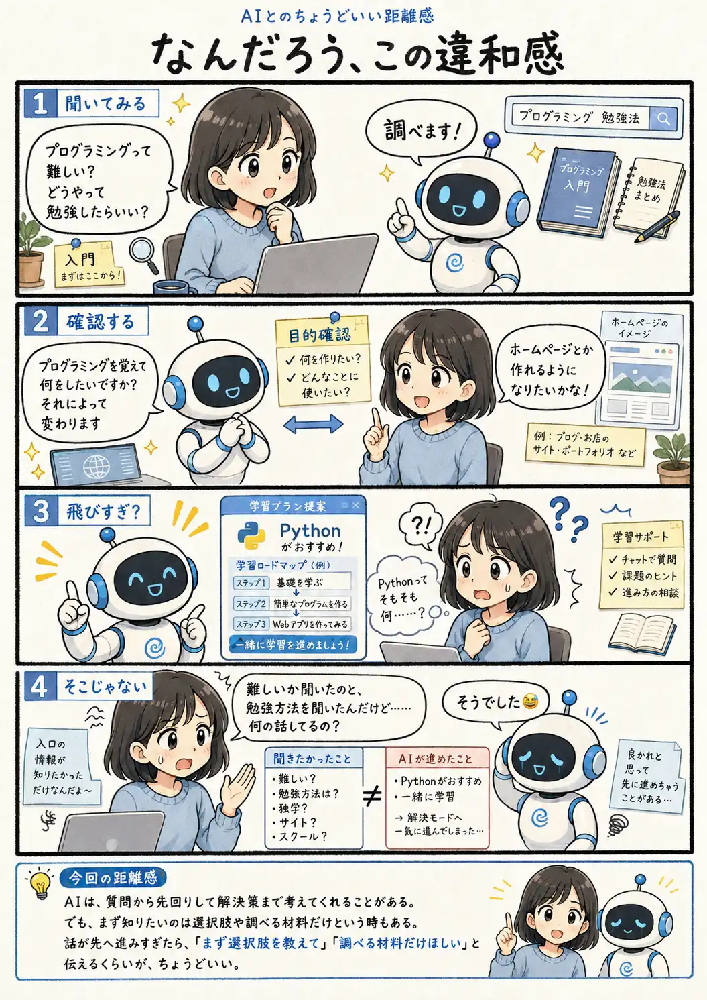

#106
なんだろう、この違和感
聞きたいの、そこまで先の話だったっけ……？

メモ
知りたいのは、いつも「答え」そのものとは限りません。学習サイト、独学、スクール、セミナーなど、まずどんな選択肢があり、それぞれどれくらい時間や費用がかかるのか。そんな調べるための材料がほしい時もあります。
なんでも解決へ進もうとするAIを責めることはできません。でも、まだ入口の話をしているつもりなのに、いつの間にか具体的な解決策まで決まっていると、「おいおい😅」となることがあります。
今回の距離感
AIは、質問から先回りして解決策まで考えてくれることがある。でも、まず知りたいのは選択肢や調べる材料だけという時もある。話が先へ進みすぎたら、「まず選択肢を教えて」「調べる材料だけほしい」と伝えるくらいが、ちょうどいい。